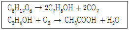

식품기사 (2019-04-27 기출문제)
1과목: 식품위생학
1. 식품위생상 지표가 되는 대장균(E. coli)에 해당하는 특성은?
- 젖당발효, methyl red test(-), VP test(+), gram(+)
- 젖당발효, methyl red test(+), VP test(-), gram(-)
- 젖당비발효, methyl red test(-), VP test(+), gram(+)
- 젖당비발효, methyl red test(+), VP test(-), gram(-)
(정답률: 83%)

2. 식품을 경유하여 인체에 들어왔을 때 반감기가 길고 칼슘과 유사하여 뼈에 축척되며, 백혈병을 유발할 수 있는 방사성 핵종은?
- 스트론튬 90
- 바륨 140
- 요오드 131
- 코발트 60
(정답률: 74%)
3. 중간수분식품(IMF)에 관한 설명 중 틀린 것은?
- 일반적으로 수분활성이 0.60 ~ 0.85 에 해당하는 식품을 말한다.
- 곰팡이의 발육을 억제한다.
- 저온을 병용하면 더욱 효과가 좋다.
- 황색 포도상구균의 발육억제에 효과적이다.
(정답률: 66%)
4. BOD가 높아지는 것과 가장 관계가 깊은 것은?
- 식품공장의 세척수
- 매연에 의한 공기오염
- 플라스틱 재생공장의 배기수
- 철강공장의 냉각수
(정답률: 84%)
5. 식품제조가공업소에서 이물관리 개선을 위해 실시할 수 있는 대책과 거리가 먼 것은?
- X-ray 검출기 설치
- 방충·방서설비 등 제조시설 개선
- 대장균 등의 미생물 완전 멸균처리
- 반가공 원료식품의 자가품질검사 강화
(정답률: 78%)
6. HACCP의 7원칙에 해당하지 않는 것은?
- 모니터링 체계 확립
- 검증 절차 및 방법 수립
- 문서화 및 기록 유지
- 공정흐름도 현장확인
(정답률: 85%)
7. 병원성세균 중 포자를 생성하는 균은?
- 바실러스 세레우스(Bacillus cereus)
- 병원성대장균(Eschefichia coli O157:H7)
- 황색포도상구균(Staphylococcus aureus)
- 비브리오 파라해모리티쿠스(Vibrio parahaemolyticus)
(정답률: 57%)
8. 음료수캔의 내부코팅제, 급식용 식판 등의 소재로 사용되었으며, 고압증기멸균기에서 용출되기 쉬운 내분비계 장애물질은?
- 다이옥신
- 폴리염화비페닐
- 디에틸스틸베스트롤
- 비스페놀 A
(정답률: 74%)
9. 식품의 산화환원전위(redox) 값에 대한 설명으로 틀린 것은?
- 산소가 투과할 수 있는 식품조직상 밀도의 영향을 받는다.
- 가공되지 않은 식품은 호흡활동이 있으므로 양(+)의 redox 값을 가진다.
- 식품의 pH가 감소할수록 redox값은 증가한다.
- 식품 중의 비타민 C나 sulfhydryl group(-SH) 등은 음의 redox 값에 기여한다.
(정답률: 56%)
10. 비브리오 패혈증의 예방대책에 대한 설명으로 잘못된 것은?
- 간장 질환자 및 상처가 난 사람은 해수욕을 가급적 삼간다.
- 어패류는 수돗물로 충분히 씻는다.
- 강물이 유입되는 어획 장소는 균의 증감을 감시한다.
- 생선회를 냉장고에 일정시간 보관하였다가 먹는다.
(정답률: 85%)
11. 안전관리인증기준(HACCP)을 적용하여 식품·축산물의 위해요소를 예방·제어하거나 허용 수준 이하로 감소시켜 당해 식품·축산물의 안전성을 확보할 수 있는 중요한 단계·과정 또는 공정은?
- Good manugacturing practice
- Hazard Analysis
- Critical Limit
- Critical Control Point
(정답률: 72%)
12. 산화방지제의 중요 메카니즘은?
- 지방산 생성 억제
- 히드로퍼옥시드(hydroperoxide) 생성 억제
- 아미노산(amini acid) 생성 억제
- 유기산 생성 억제
(정답률: 74%)
13. 경구감염병의 특징에 대한 설명 중 틀린 것은?
- 감염은 미량의 균으로도 가능하다.
- 대부분 예방접종이 가능하다.
- 잠복기가 비교적 식중독보다 길다.
- 2차 감염이 어렵다.
(정답률: 82%)
14. 석탄산계수에 대한 설명으로 옳은 것은?
- 소독제의 무게를 석탄산 분자량으로 나눈 값이다.
- 소독제의 독성을 석탄산의 독성 1000 으로 하여 비교한 값이다.
- 각종 미생물을 사멸시키는데 필요한 석탄산의 농도 값이다.
- 석탄산과 동일한 살균력을 보이는 소독제의 희석도를 석탄산의 희석도로 나눈 값이다.
(정답률: 83%)
15. 산화방지제의 효과를 강화하기 위하여 유지 식품에 첨가되는 효력 증강제(synergist)가 아닌 것은?
- tartaric acid
- propyl gallate
- citric acid
- phosphoric acid
(정답률: 62%)
16. 식품에 오염된 방사능 안전관리를 위하여 기준을 설정하여 관리하는 핵종들은?
- 140Ba, 141Ce
- 137Cs, 131I
- 89Sr, 95Zr
- 59Fe, 90Sr
(정답률: 89%)
17. 다음 중 수분함량 측정방법이 아닌 것은?
- Soxhlet 추출법
- 감압가열건조법
- Karl-Fisher 법
- 상압가열건조법
(정답률: 80%)
18. 환자의 소변에 균이 배출되어 소독에 유의해야 되는 감염병은?
- 장티푸스
- 콜레라
- 이질
- 디프테리아
(정답률: 78%)
19. 식품에 사용되는 합성보전료의 목적은?
- 식품의 산화에 의한 변패를 방지
- 식품의 미생물에 의한 부패를 방지
- 식품에 감미를 부여
- 식품의 미생물을 사멸
(정답률: 78%)
20. 병에 걸린 동물의 고기를 제대로 가열하지 않고 섭취하거나 가공할 때 사람에게도 감염될 수 있는 감염병은?
- 디프테리아
- 급성회백수염
- 유행성 간염
- 브루셀라병
(정답률: 77%)
2과목: 식품화학
21. 식용유지의 자동산화 중 나타나는 변화가 아닌 것은?
- 과산화물가가 증가하다가 감소한다.
- 공액형 이중결합(conjugated double bonds)을 가진 화합물이 증가한다.
- 요오드가가 증가한다.
- 산가가 증가한다.
(정답률: 58%)
22. 다음 carotenoid 중 xanthophyll 그룹에 해당하는 것은?
- β-carotene
- cryptoxanthin
- α-carotene
- lycopene
(정답률: 71%)
23. 다음 중 물에 녹고 가열에 의해 쉽게 응고되는 단백질은?
- albumin
- protamine
- albuminoid
- glutelin
(정답률: 74%)
24. 서로 다른 형태와 크기를 가진 복합물질로 구성된 비뉴톤액체의 흐름에 대한 저항성을 나타내는 물리적 성질을 무엇이라 하는가?
- 점성
- 점조성
- 점탄성
- 유동성
(정답률: 51%)
25. 바이센베르그 효과를 나타내는 식품과 거리가 먼 것은?
- 연유
- 꿀
- 녹아있는 치즈
- 나토
(정답률: 73%)
26. 소비자의 선호도를 평가하는 방법으로써 새로운 제품의 개발과 개선을 위해 주로 이용되는 관능 검사법은?
- 묘사 분석
- 특성차이 검사
- 기호도 검사
- 차이식별 검사
(정답률: 86%)
27. 다음 중 비타민 B2가 알칼리 환경에서 광분해 되어 생성되는 물질은?
- lumiflavin
- thiazole
- thiochrome
- lymichrome
(정답률: 79%)
28. 식품의 텍스처를 측정하는 texturometer에 의한 texture-profile로부터 알 수 없는 특성은?
- 탄성
- 저작성
- 부착성
- 안정성
(정답률: 81%)
29. 고구마, 밤 등의 과실 통조림에서 회색의 복합염을 형성하여 산소가 남아 있는 경우 흑청색이나 청록색으로 변하는 이유는?
- 탄닌 성분이 제2철염과 반응하기 때문에
- 탄닌 성분이 마그네슘 이온과 반응하기 때문에
- 탄닌 성분이 외부의 산소와 결합하기 때문에
- 탄닌 성분이 탈수되기 때문에
(정답률: 67%)
30. 식용유지의 과산화물가가 80밀리당량(meq/kg)인 경우, 밀리몰(mM/kg)로 환산한 과산화물가는?
- 10 mM/kg
- 20 mM/kg
- 30 mM/kg
- 40 mM/kg
(정답률: 69%)
31. 마이야르반응에 의해 발생하지 않는 휘발성분은?
- 피라진류(pyrazines)
- 피롤류(pyrroles)
- 에스테르류(esters)
- 옥사졸류(oxazoles)
(정답률: 53%)
32. 알칼로이드계의 쓴맛 물질이 아닌 것은?
- 카페인
- 테오브로민
- 퀴닌
- 피넨
(정답률: 59%)
33. 알라닌(alanine)이 Strecker 반응을 거치면 무엇으로 변하는가?
- acetic acid
- ethanol
- acetamide
- acetaldehyde
(정답률: 65%)
34. CuSO4의 알칼리 용액에 넣고 가열할 때 Cu2O의 붉은색 침전이 생기지 않는 것은?(오류 신고가 접수된 문제입니다. 반드시 정답과 해설을 확인하시기 바랍니다.)
- maltose
- sucrose
- lactose
- glucose
(정답률: 66%)
35. KOH를 첨가하였을 때 글리세롤을 형성하지 못하는 지방질은?
- 인지질
- 중성지질
- 트리팔미틴
- 라이코펜
(정답률: 68%)
36. 우유 단백질 간의 이황화결합을 촉진시키는데 관여하는 것은?
- 설프하이드릴(sulfhudryl)기
- 이미다졸(imifazole)기
- 페놀(phenol)기
- 알킬(alkyl)기
(정답률: 66%)
37. 카레의 노란색을 나타내는 색소는?
- 안토시아닌(anthocyanin)
- 커큐민(curcumin)
- 탄닌(tannin)
- 카테킨(catechin)
(정답률: 83%)
38. 가열 조리한 무의 단맛 성분은?
- allicin
- aspartame
- methyl mercaptan
- phyllodulcin
(정답률: 71%)
39. 포도당이 아글리콘(aglycone)과 에테르 결합을 한 화합물의 명칭은?
- glucoside
- glycoside
- galactoside
- riboside
(정답률: 58%)
40. 옥수수를 주식으로 하는 저소득층의 주민들 사이에서 풍토병 또는 유행병으로 알려진 질병의 원인을 알기 위하여 연구한 끝에 발견된 비타민은?
- 나이아신
- 비타민 E
- 비타민 B2
- 비타민 B6
(정답률: 73%)
3과목: 식품가공학
41. 유지를 추출하기 위한 유기용제의 구비조건으로 잘못된 것은?
- 유지 및 기타 물질을 잘 추출할 것
- 유지 및 착유박에 이취와 독성이 없을 것
- 기화열 및 비열이 작아 회수하기가 쉬울 것
- 인화 및 폭발하는 등의 위험성이 적을 것
(정답률: 74%)
42. 발효를 생략하고 기계적으로 반죽을 형성시키는 제빵공정(no time dough method)에서 첨가하는 cystein의 작용을 옳게 설명한 것은?
- gluten의 –NH2 기에 작용하여 –N=N- 로 산화한다.
- gluten의 –SH 기에 작용하여 –S-S- 로 산화한다.
- gluten의 –S-S- 결합에 작용하여 –SH 로 환원한다..
- gluten의 –N=N- 결합에 작용하여 –NH2 로 환원한다.
(정답률: 64%)
43. 원통형 저장탱크에 밀도가 0.917 g/cm3인 식용유가 5.5m 높이로 담겨져 있을 때, 탱크 밑바닥이 받는 압력은? (단, 탱크의 배기구가 열려져 있고 외부압력이 1기압이다.)
- 0.495 × 105 Pa
- 0.990 × 105 Pa
- 1.013 × 105 Pa
- 1.508 × 105 Pa
(정답률: 33%)
44. 천연과일주스의 제조 공정 중 탈기(공기 제거)의 목적이 아닌 것은?
- 이미, 이취의 발생을 감소시킨다.
- 거품의 생성을 억제시킨다.
- 색소파괴를 감소시킨다.
- 조직감을 향상시킨다.
(정답률: 69%)
45. 튀김유의 품질 조건이 아닌 것은?
- 거품이 일지 않을 것
- 열에 대하여 안전할 것
- 튀길 때 발생하는 연기가 적을 것
- 가열에 의한 점도 변화가 클 것
(정답률: 86%)
46. 밀의 제분공정에서 조질의 주요 목적은?
- 외피와 배유의 분리를 쉽게 하기 위한 것
- 밀가루의 품질을 균일하게 하기 위한 것
- 외피의 분쇄를 쉽게 하기 위한 것
- 협잡물을 제거하기 위한 것
(정답률: 62%)
47. 피부건강에 도움을 주는 건강기능식품 기능성 원료(고시형 원료)가 아닌 것은?
- 알로에 겔
- 쏘팔메토 열매 추출물
- 엽록소 함유 식물
- 클로렐라
(정답률: 64%)
48. 무당연유의 수분함량은 약 얼마인가?
- 25% 정도
- 30% 정도
- 75% 정도
- 90% 정도
(정답률: 57%)
49. 식품포장재료에 요구되는 기본 성질에 대한 설명으로 틀린 것은?
- 품질을 유지하기 위한 성질로 친수성, 친유성, 광택성이 있다.
- 식품을 보호하는 성질로 가스투과도, 투습도, 광차단성, 자외선방지, 보향성이 있다.
- 상품가치를 높이는 성질로 투명성, 인쇄적성, 밀착성이 있다.
- 포장효과 및 생산성을 높이는 성질로 밀봉성, 기계적성, 내한성, 내열성, 위조방지가 있다.
(정답률: 68%)
50. 소시지 가공 시 염지의 효과가 아닌 것은?
- 육색소를 고정하여 제품의 색택을 유지시킨다.
- 보수성과 결착성을 증진시킨다.
- 방부성과 독특한 맛을 갖게 한다.
- 단백질을 변성시키고 살균한다.
(정답률: 77%)
51. I.Q.F 동결에 관한 설명 중 틀린 것은?
- Individual quick feeezing 이다.
- 식품의 개체를 따로 따로 동결하는 방법이다.
- 최근 수산물의 동결저장에 많이 응용되고 있는 방법이다.
- 공기동결 방법에 적합한 동결현상이다.
(정답률: 73%)
52. 배지를 110℃에서 20분간 살균하려 한다. 사용하고자 하는 살균기의 온도가 화씨(°F)로 표시되어 있을 때 이 살균기를 사용하려면 살균온도(°F)를 얼마로 고정하여 살균하여야 하는가?
- 110°F
- 212°F
- 230°F
- 251°F
(정답률: 54%)
53. 물에 불린 콩을 마쇄하여 두부를 만들 때 마쇄가 두부에 미치는 영향에 대한 설명으로 틀린 것은?
- 콩의 마쇄가 불충분하면 비지가 많이 나오므로 두부의 수율이 감소하게 된다.
- 콩의 마쇄가 불충분하면 콩단백질인 glycinin이 비지와 함께 제거되므로 두유의 양이 적어 두부의 양도 적다.
- 콩을 지나치게 마쇄하면 불용성의 고운가루가 두유에 섞이게 되어 응고를 방해하여 두부의 품질이 좋지 않게 된다.
- 콩을 지나치게 마쇄하면 콩 껍질, 섬유소 등이 제거되어 영양가 및 소화흡수율이 증가한다.
(정답률: 79%)
54. 전분의 당화법 중 효소당화법에 대한 설명이 아닌 것은?
- 정제를 완전히 해야 한다.
- 쓴맛이 없고 착색물질 등 생성물이 생기지 않는다.
- 당화전분농도는 약 50% 이다.
- 97% 이상의 높은 분해율을 보인다.
(정답률: 51%)
55. 무당연유의 제조공정에 대한 설명으로 틀린 것은?
- 당을 넣지 않는다.
- 예열공정을 하지 않는다.
- 균질화는 한다.
- 가열멸균을 한다.
(정답률: 79%)
56. 대두조직단백(Textured soybean protein : TSP, 조직대두단백)을 대체 소재로 사용 시 기대되는 효과로 틀린 것은?
- 비교적 양질의 단백질을 함유하고 있어 영양가가 우수하다.
- 제품이 대개 건조된 상태로 되어 있어 포장 및 운반이 쉽다.
- 지방과 Na 함량이 적어 고혈압, 비만증 등의 환자를 위한 식단에 적합하다.
- 외관, 형태, 조직 또는 촉감은 육류와 달라 증량 향상을 목적으로 사용된다.
(정답률: 78%)
57. 신선란에 대한 설명으로 틀린 것은?
- 비중은 1.08 ~ 1.09 이다.
- 난황의 굴절률은 1.42 정도로 난백보다 높다.
- 난백의 pH는 6.0 정도로 난황보다 낮다.
- 신선란의 pH는 저장기간이 지남에 따라 증가한다.
(정답률: 58%)
58. 채소를 가공할 때 전처리로 데치기를 하는 목적이 아닌 것은?
- 효소의 불활성화
- 오염 미생물의 살균
- 풋냄새의 제거
- 향의 보존
(정답률: 84%)
59. 유통기한 설정시 반응속도의 온도 의존성에 관한 설명으로 틀린 것은?
- 반응속도는 온도가 증가하면 직선적(linear)으로 증가한다.
- 온도 의존성은 일반적으로 아레니우스(Arrhenius)식으로 표현된다.
- 온도 의존성은 특히 가속저장방법으로부터 유통기한 예측에 적용된다.
- Q10이 2인 식품이 50℃에서 유통기한이 2주일 때 30℃ 에서는 8주이다.
(정답률: 58%)
60. 마요네즈 제조 시 사용되는 달걀의 가장 중요한 물리 화학적 원리는?
- 기포성
- 유화성
- 포립성
- 응고성
(정답률: 85%)
4과목: 식품미생물학
61. 알코올성 음료의 상업적 생산에 관여하는 효모와 가장 거리가 먼 것은?
- Saccharomyces cerevisiae
- Saccharomyces sake
- Saccharomyces carlsbergensis
- Zygosaccharomyces rouxii
(정답률: 77%)
62. 효모의 대표적인 증식방법으로 세포에 생긴 작은 돌기가 커지면서 새로운 자세포가 생성되는 것은?
- 출아
- 사출
- 세포분열
- 접합
(정답률: 83%)
63. 효모 미토콘드리아(mitochondria)의 주요 작용은?
- 호흡작용
- 단백질 생합성 작용
- 효소 생합성 작용
- 지방질 생합성 작용
(정답률: 77%)
64. GRAS(generally regarded as safe) 균주로 안전성이 입증되어 있고, 단세포 단백질 및 리파아제 생산균주는?
- Candida rugosa
- Aspergillus niger
- Rhodotorula glutinus
- Bacillus subtilis
(정답률: 45%)
65. Asymmetrica에 속하며 치즈 제조에 사용되는 곰팡이는?
- Penicillium roqueforti
- Penicillium chrysogenum
- Penicillium expansum
- Penicillium citrinum
(정답률: 74%)
66. 경사면으로 굳혀 호기성 미생물 배양에 사용하는 배지는?
- 사면배지
- 평판배지
- 고층배지
- 증균배지
(정답률: 82%)
67. 붉은 색소를 생성하며 생선묵과 우유를 적변시키는 것은?
- Serratia 속
- Escherichia 속
- Pseudomonas 속
- Lactobacillus 속
(정답률: 67%)
68. 청국장 제조에 쓰이는 균은?
- Bacillus mesentericus
- Bacillus subtilis
- Bacillus coagulans
- Lactobacillus plantarum
(정답률: 77%)
69. 미생물의 증식을 억제하는 항생물질 중 세포벽 합성을 저해하는 것은?
- Penicillin
- Chloramphenicol
- Tetracycline
- Streptomycin
(정답률: 78%)
70. Rhizopus 속에 대한 설명으로 옳은 것은?
- 털곰팡이라고도 한다.
- 가근을 형성하지 않는다.
- 혐기적인 조건에서 알코올이나 젖산 등을 생산한다.
- 자낭균류에 속한다.
(정답률: 48%)
71. 당류의 발효성 실험법으로 적합하지 않은 것은?
- Lindner법
- Durham tube법
- Einhorn tube법
- Pilsner법
(정답률: 56%)
72. 미생물의 증식곡선에서 환경에 대한 적응시기로 세포수 증가는 거의 없으나 세포 크기가 증대되며 RNA 함량이 증가하고 대사활동이 활발해지는 시기는?
- 유도기(lag phase)
- 대수기(logarithmic phase)
- 정상기(stationary phase)
- 사멸기(death phase)
(정답률: 71%)
73. 유제품 공장에서 파아지(phage) 오염 예방법으로 적합하지 않은 것은?
- 2종 이상의 균주 조합 계열을 만들어 2~3일마다 바꾸어 사용한다.
- 내성균주를 사용한다.
- 온도 및 pH 등의 환경조건을 변화시킨다.
- 공장과 주변을 청결히 하고 용기의 가열·살균, 약제 사용 등을 철저히 한다.
(정답률: 64%)
74. 세대시간이 20분인 세균 3마리를 2시간 배양한 후의 균수는?
- 36
- 64
- 192
- 729
(정답률: 72%)
75. 클로렐라(chlorella)에 대한 설명 중 옳은 것은?
- 태양 에너지의 이용률은 일반 재배식물과 유사하다.
- 사람에 대한 소화율이 다른 균체보다 높다.
- 현미경으로만 볼 수 있고 담수에서 자란다.
- 건조물은 약 50%가 단백질이고 아미노산과 비타민이 풍부하다.
(정답률: 63%)
76. Bergey의 초산균 분류 중 초산을 산화하지 않으며 포도당 배양기에서 암갈색 색소를 생성하는 균주는?
- Acetobacter roseum
- Acetobacter oxydans
- Acetobacter melanogenum
- Acetobacter aceti
(정답률: 54%)
77. Penicillium 속이 생산하는 독소는?
- Rubratoxin
- Aflatoxin
- Tetrodotoxin
- Zearalenone
(정답률: 49%)
78. 분열에 의한 무성생식을 하는 전형적인 특징을 보이는 효모는?
- Saccharomyces 속
- Zygosaccharomyces 속
- Sacchromycodes 속
- Schizosaccharomyces 속
(정답률: 55%)
79. 단시간 내에 특정 DNA 부위를 기하급수적으로 증폭시키는 중합효소연쇄반응(PCR)의 반복되는 단계는?
- DNA 이중나선의 변성 → RNA 합성 → DNA 합성
- RNA 합성 → DNA 이중나선의 변성 → DNA 합성
- DNA 이중나선의 변성 → 프라이머 결합 → DNA 합성
- 프라이머 결합 → DNA 이중나선의 변성 → DNA 합성
(정답률: 66%)
80. 그람염색에서 가장 먼저 사용하는 시약은?
- 알코올(alcohol)
- 크리스탈 바이올렛(crystal violet)
- 사프라닌(safranin)
- 그람 요오드(gram's iodine)
(정답률: 73%)
5과목: 생화학 및 발효학
81. Biotin 과잉배지에서 glutamic acid 발효 시 첨가하는 물질은?
- vitamin B12
- thiamin
- penicillin
- vitamin C
(정답률: 53%)
82. 비타민 D에 대한 설명으로 틀린 것은?
- Isoprene 단위의 축합으로 합성된 isoprenoid 화합물이다.
- 비타민 A, E, K와 마찬가지로 수용성이다.
- 피부에서 광화학반응에 의해 7-dehydrocholesterol로부터 합성된다.
- Vitamin D3는 1,25-dehydroxyvitamin D3로 전환되어 Ca2+대사를 조절한다.
(정답률: 78%)
83. 아미노산의 탈아미노반응으로 유리된 NH3의 대사경로가 아닌 것은?
- α-keto acid와 결합하여 아미노산을 생성
- 해독작용의 하나로서 glutamine을 합성
- 간에서 요소히로를 거쳐 요소로 합성
- 간에서 당신생(gluconeogenesis) 과정을 거침
(정답률: 61%)
84. 고농도 유기물의 폐수를 처리하기 위한 메탄발효법은 어떤 처리법에 해당되는가?
- 활성오니법
- 살수여상법
- 혐기적 처리법
- 호기적 처리법
(정답률: 66%)
85. 전분 당화 효소 중 α-1,4 linkage를 무작위로 가수분해하지만, α-1,6 linkage를 분해하지 못하는 endo 효소는?
- α-amylase
- β-amylase
- glucoamylase
- isoamylase
(정답률: 60%)
86. 미카엘리스 상수(Michaelis constant) Km의 값이 낮은 경우는 무엇을 의미하는가?
- 효소와 기질의 친화력이 크다.
- 효소와 기질의 친화력이 작다.
- 기질과 저해제가 경쟁한다.
- 기질과 저해제가 결합한다.
(정답률: 64%)
87. 핵산 관련 물질의 정미성에 관한 설명으로 틀린 것은?
- Ribose의 5′ 위치에 인산기가 붙는다.
- Mononucleotide에 정미성이 있다.
- 정미성은 pyrimidine계의 것에는 있으나, purine계의 것에는 없다.
- Nucleotide의 당은 deoxyribose, ribose 이다.
(정답률: 70%)
88. 효소와 기질이 반응할 때 기질의 구조가 조금만 달라도 그 기질에 대해서 효소가 활성을 갖지 못하는 것을 무엇이라 하는가?
- 활성부위(active site)
- 기질특이성(specificity)
- 촉매효율(catalytic efficiency)
- 조절(regulation)
(정답률: 82%)
89. 광합성의 명반응과 암반응에 대한 설명이 틀린 것은?
- 명반응은 온도의 영향을 받지 않으며, 빛의 세기에 영향을 받는다.
- 암반응은 빛의 존재에 직접적으로 의존하지 않는다.
- 명반응은 빛 에너지를 ATP 등의 화학 에너지로 전환한다.
- 암반응은 질소고정을 이용하여 질소화합물로 동화시키는 효소반응이다.
(정답률: 59%)
90. 격렬한 운동을 하는 동안 혐기적인 조건에서 근육 속에 생성된 젖산이 Cori cycle에 의해 간으로 이동하여 무엇으로 전환되는가?
- 글리신(glycine)
- 알라닌(alanine)
- 포도당(glucose)
- 글루탐산(glutamic acid)
(정답률: 59%)
91. 균주 개량 및 신물질 생산을 위한 재조하 DNA 기술(recombinant DNA technology)에 필수적으로 요구되는 수단이 아닌 것은?
- DNA methylase
- DNA ligase
- Restriction enzyme
- Vector
(정답률: 52%)
92. 맥주 제조 시 당화액을 자비할 때 hop의 쓴맛을 내는 성분은?(오류 신고가 접수된 문제입니다. 반드시 정답과 해설을 확인하시기 바랍니다.)
- isohumulone
- cohumulone
- lupulone
- tannin
(정답률: 52%)
93. 아래와 같은 반응으로 만들어지는 최종 발효 생성물은?

- 식초
- 요구르트
- 알코올
- 핵산
(정답률: 78%)
94. TCA cycle 중 전자전달(electron transport) 과정으로 들어가는 FADH2를 생성하는 반응은?
- isocitrate → α-ketoglutarate
- α-ketoglutarate → sussinyl CoA
- succinate → fumarate
- malate → oxaloacetate
(정답률: 56%)
95. 단일 탄소기를 운반하는 생화학 반응에서 보조효소로 작용하는 비타민은?
- 엽산
- 비타민 B1
- 비타민 C
- Pantothenic acid
(정답률: 53%)
96. Mycobacterium tuberculosis에서 분리정제된 DNA 시료 중 몰비로 20%의 adenine이 함유되어 있다. 이 DNA 중에 cytosine의 백분율은?
- 20%
- 30%
- 40%
- 50%
(정답률: 60%)
97. 지방산의 생합성 속도로 결정하는 효소는?
- 시트르산 분해효소
- 아세탈-CoA 카르복실화효소
- ACP-아세틸기 전이효소
- ACP-말로닐기 전이효소
(정답률: 76%)
98. 유전물질이 발견되지 않는 세포 내 소기관은?
- chloroplasts
- lysosomes
- mitochondria
- nuclei
(정답률: 55%)
99. 심부배양과 비교하여 고체배양이 갖는 장점이 아닌 것은?
- 곰팡이에 의한 오염을 방지할 수 있다.
- 공정에서 나오는 폐수가 적다.
- 시설비가 적게 들고 소규모 생산에 유리하다.
- 배지조성이 단순하다.
(정답률: 60%)
100. 미생물에 의해서 분해되기 어려운 가소제는?
- dibutyl stbacate
- diisooctyl phthalate
- polypropylene adipate
- polypropylene sebacate
(정답률: 45%)